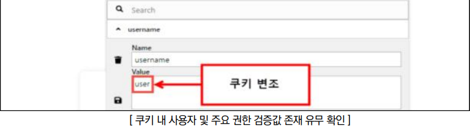
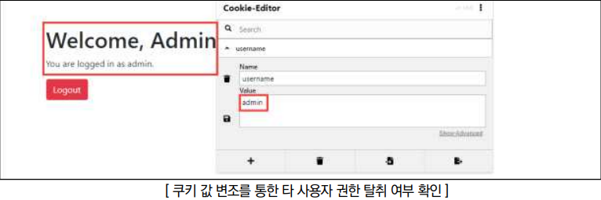

점검 목적
- 쿠키를 사용하는 경우, 안전한 알고리즘으로 암호화하여 공격자가 쿠키 값 변조를 통해 다른 사용자로 위장하거나 권한을 변경하는 것을 방지하기 위함
- 쿠키 변조를 통한 임의의 타 사용자 권한 탈취 여부 점검
참고
※ 쿠키(Cookie): 서버가 사용자의 웹 브라우저에 전송하는 작은 데이터 조각. 브라우저는 그 데이터 조각들을 저장 후, 동일한 서버에 대하여 재요청 시 저장된 데이터를 함께 전송
판단 기준
양호 : 쿠키를 사용하지 않고 서버 사이드 세션을 사용하고 있거나, 쿠키를 사용하는 경우 안전한 알고리즘(SEED, 3DES, AES)이 적용되어 있는 경우
취약 : 안전한 알고리즘이 적용되지 않은 쿠키를 사용하거나, 쿠키로만 인증 및 권한 부여를 적용하는 경우
조치 방법
- 쿠키 대신 서버 사이드 세션 방식을 사용하거나, 쿠키를 통해 인증 등 중요한 기능을 구현해야 하는 경우 안전한 알고리즘(SEED, 3DES, AES 등)을 적용
점검 방법
Step 1) 일반 사용자 계정으로 로그인 한 뒤 쿠키 내용 및 발행되는 쿠키에 중요 정보(인증을 위한 ID, 권한을 위한 구분자 등)의 노출 여부 확인 후 변조 시도

Step 2) 쿠키 내 노출되는 중요 정보를 변조하여 다른 사용자 및 권한으로 정상 이용이 가능한지 확인

조치 방법
1. 쿠키 대신 보안성이 강한 서버 사이드 세션 방식 사용. 클라이언트 사이드 방식인 쿠키는 구조상 다양한 취약점에 노출될 가능성이 존재
2. 쿠키를 사용해서 중요 정보나 인증을 구현해야 할 경우엔 안전한 알고리즘(SEED, 3DES, AES 등) 적용
3. 쿠키 서명(HMAC)을 통해 변조 여부 검증 및 HttpOnly, Secure, SameSite 속성을 적용하여 보안 강화